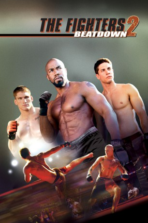
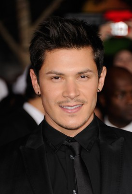
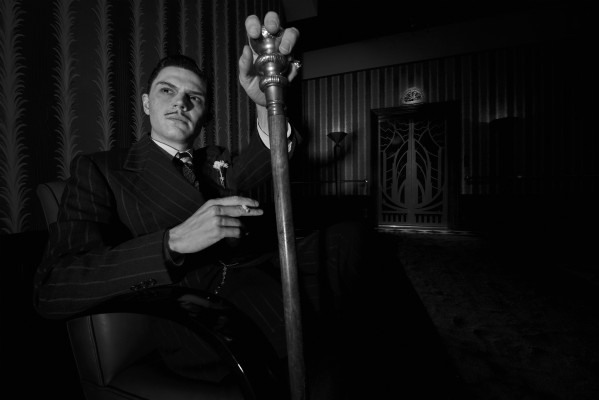
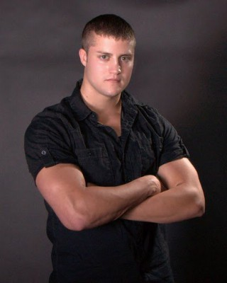
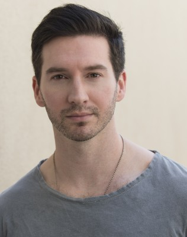
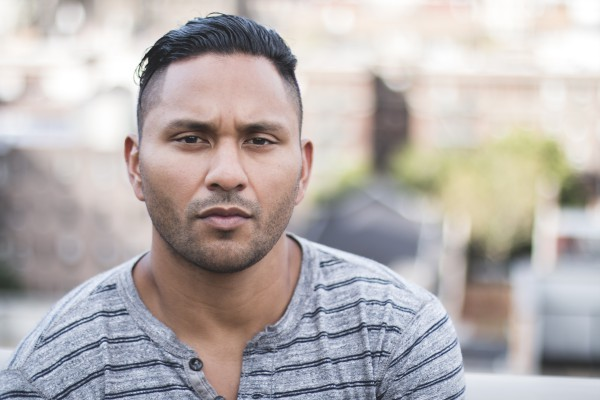
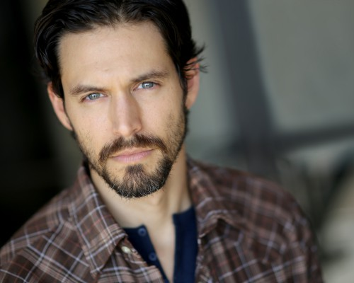

#3824 The Fighters 2: Beatdown
Alternativ: Never Back Down 2: The Beatdown
 
 IMDB-Wertung: 5.8 / 10
IMDB-Wertung: 5.8 / 10  Metascore: 0
Metascore: 0 
Vier College-Schüler mit ganz unterschiedlichen Hintergründen kommen zusammen, um unter Case Walker, einem ehemaligen Star des Mixed-Martial-Arts-Zirkus, zu trainieren und die spektakulärsten Kampf-Techniken zu lernen. Denn hinter den Mauern eines unscheinbaren Colleges wird der ultimative Showdown inoffizieller MMA-Kämpfe geplant. Und die vier Kämpfer werden dann zum ultimativen Kampf antreten - gegeneinander und vor allem gegen den Verräter in ihrer Mitte.
Jahr: 2011
Dauer: 97 Minuten
FSK: 16
Land: USA Studio: Sony Pictures Home EntertainmentTonspuren:
Untertitel:
Auflösung: 1080p (1920x1080) Größe: 3819 MB
Genre: Action, Drama, Sport
Regisseur:  Michael Jai White
Michael Jai White
Drehbuch: David Dorfman
Soundtrack:
Darsteller:
 Michael Jai White als Case Walker
Michael Jai White als Case Walker- Dean Geyer als Mike Stokes
-  Alex Meraz als Zack Gomes
- Scottie Epstein als Justin Epstein
- Jillian Murray als Eve
-  Evan Peters als Max Cooperman
 Rus Blackwell als Caucasian Cop
Rus Blackwell als Caucasian Cop-  Beau Brasseaux als Fighter
- Jude Cambise als Referee
 Grant Case als Zack's Friend
Grant Case als Zack's Friend- Laura Cayouette als Vale Newhouse
- Gerardo Davila als Hispanic Cop
 Danny Epper als Irate Big man
Danny Epper als Irate Big man J.D. Evermore als Mike's Dad
J.D. Evermore als Mike's Dad Thayr Harris als Rogul
Thayr Harris als Rogul-  Garrett Hines als Wrestling Opponent
-  Hans Marrero als Martinez
 J. Patrick McNamara als Doctor
J. Patrick McNamara als Doctor Sam Medina als Thug
Sam Medina als Thug Lance E. Nichols als Official Agent
Lance E. Nichols als Official Agent Jeremy Palko als Kurt
Jeremy Palko als Kurt- Taylor Roppolo als Young Woman
 Aaron Saxton als Fight Dude
Aaron Saxton als Fight Dude- Christopher Severio als Bouncer 1
-  Dean J. West als Upperclassman
- Mike Wilson als Cop #1
- Lauren Alexandra als Frat Party Girl , uncredited
- Jon Bailey als Annoucer , uncredited
- Trace Cheramie als Cop , uncredited
- Lyoto Machida als Himself , uncredited
- Austin Naulty als Fighter , uncredited
- Blaire Noonan als Dancer , uncredited
- Tony Severio als Beatdown Patron , uncredited
- Todd Duffee als Tim Newhouse
- Stacey Asaro als Receptionist
 Gralen Bryant Banks als Frankie
Gralen Bryant Banks als Frankie- Eddie Bravo als D.J. Bravo
- Margo Nicole Clark als Girl in Park that gets a kiss and gives her number
- Emily D. Haley als Woman at Fight
- Jeanine Hill als Lift Up Shirt Babe
- Bliss Kelley als Hot Chick
- Craig Leydecker als Coach
- John McCarthy als Himself
- Tracy Miller als Vince
- Gabrielle Shuff als Stripper
- Adam Sibley als Fighter 1
- Preston Bishop als UFC Official , uncredited
- Alex Froman als College Student , uncredited
- Langdon Herrick als Crowd Member , uncredited
- Laura Muse Jackson als Frat Party Girl , uncredited
Datei: X:\3-Trilogie(A-F)\Fighters\Fighters 2 Beatdown, The (2011, FSK16, 1920x1080).mkv seit 17.06.2016
Festplatte: HD Collection-2(A-Z)-3(A-M)
 Alle Filme aus Gruppe '3-Trilogie(A-F)\Fighters'
Alle Filme aus Gruppe '3-Trilogie(A-F)\Fighters'